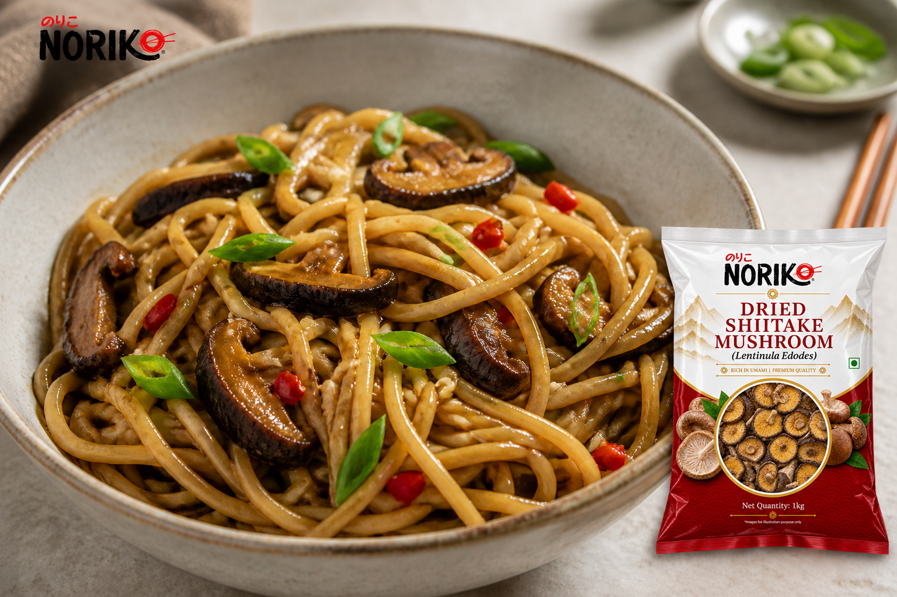

Recipe · Vegetarian
Shiitake Chilli Garlic Noodles
Glossy noodles with deeply savoury shiitake, plenty of garlic and just enough chilli heat.
Prep 25 minCook 15 minServes 3Easy
Start cooking
Method
- Soak the mushrooms.Cover the shiitake with hot water and soak for 20–25 minutes. Lift them out, squeeze gently and slice. Strain and reserve the soaking liquid.
- Mix the sauce.Combine soy sauce, rice vinegar, sesame oil, sugar and 60 ml reserved soaking liquid.
- Cook the noodles.Boil according to the packet directions until just tender. Drain and rinse briefly, then shake off excess water.
- Build the flavour.Heat neutral oil in a wok or wide pan. Stir-fry shiitake for 3 minutes. Add garlic and chilli and cook for 30 seconds without browning the garlic.
- Toss and finish.Add noodles and sauce. Toss over high heat for 2–3 minutes until the noodles are glossy and the liquid is absorbed. Fold through most of the spring onion and finish with sesame.
Chef's note: The strained shiitake soaking liquid carries a great deal of flavour—do not discard it.
NORIKO used here